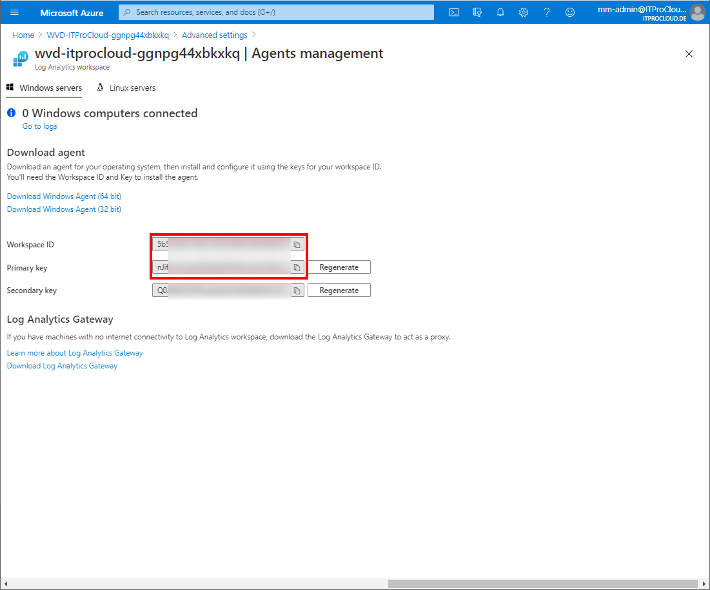

Push Azure Windows Virtual Desktop (WVD) Session Host state to Log Analytics to create alerts if hosts become unavailable or failed

Microsoft offers an easy way to monitor a WVD/AVD environment’s basic metrics directly integrated into the Azure portal. I mostly extend the monitoring using sepago’s Azure Monitor for WVD (https://www.sepago.de/en/azure-monitor-en/), which is also included in Nerdio Manager for WVD (https://getnerdio.com/nerdio-manager-for-wvd/).
The native Microsoft solution shows the session hosts’ state (available, unavailable, failed, …) in a workbook (insights) in the Azure Portal. Unfortunately, the way of showing this state cannot be used to create an alert in Azure Monitor and get notified.
To solve this challenge, we have to put the session host states as a custom log into a Log Analytics workspace. The data can be queried and uploaded to Log Analytics with an Azure Logic App
Installation and configuration
Deploy the prepared logic app into your subscription using the “Deploy to Azure” button.
To query the Azure Management API, you need a service principal (a function account) with the right permission. Create the service principal in the Azure Portal:
- Azure Active Directory -> App registrations -> New registration and give it a name (e.g. svc_AzureWvdSessionHostsAvailability4AzureMonitor) and press register
- Go to Certificates and secrets -> Add new client secret and type in a name (e.g. Key1) and expiration date (make a note into your calendar) and press add
- Copy the generated secret for later use
- Go to overview and copy the application id and directory id for later use
- Give the service principal permission to the subscription: Access control (IAM) -> Add -> Add role assignment -> “Desktop Virtualization Host Pool Reader” and select the service principal
To upload the data to your Azure Monitor / log analytics workspace, you need the workspace id and key of an existing Log Analytics workspace.
- Go to your log analytics workspace -> select Advanced settings -> Agents management -> copy the workspace id and primary key for later use 
Go to your deployed logic app and click edit.
-
Edit the configuration of “Authentication: Tenant Id”, “Authentication: App Id”, “Authentication: App Password” and “Subscription Id”: Enter the data of the service principal and the subscription id (Guid)
-
Expand “For each”, “Until” and open “Send Data (Preview)”
-
Click on Connections and add a new one (Add new)
-
Give a name (e.g. ToLogAnalytics), the primary key and workspace id from log analytics and press create

Save the logic app and press run to test it.
If everything looks good, our logic app will upload the data to log analytics every 5 minutes (can be changed).
Querying data
You can query the data from log analytics with WVDHostPoolStatistic_CL. Keep in mind that it takes a while (30 minutes) to build the first upload schema.
To show the data in a list you can start with this query:
WVDHostPoolStatistic_CL
| project TimeGenerated, SessionHost=name_s, properties_status_s, properties_allowNewSession_b, properties_updateState_s, properties_assignedUser_s
To create an alert you can add an alert to Log Analytics based on the following query (lists unavailable hosts):
WVDHostPoolStatistic_CL
| project TimeGenerated, SessionHost=name_s, properties_status_s, properties_allowNewSession_b, properties_updateState_s, properties_assignedUser_s
| where properties_status_s=~"unavailable"